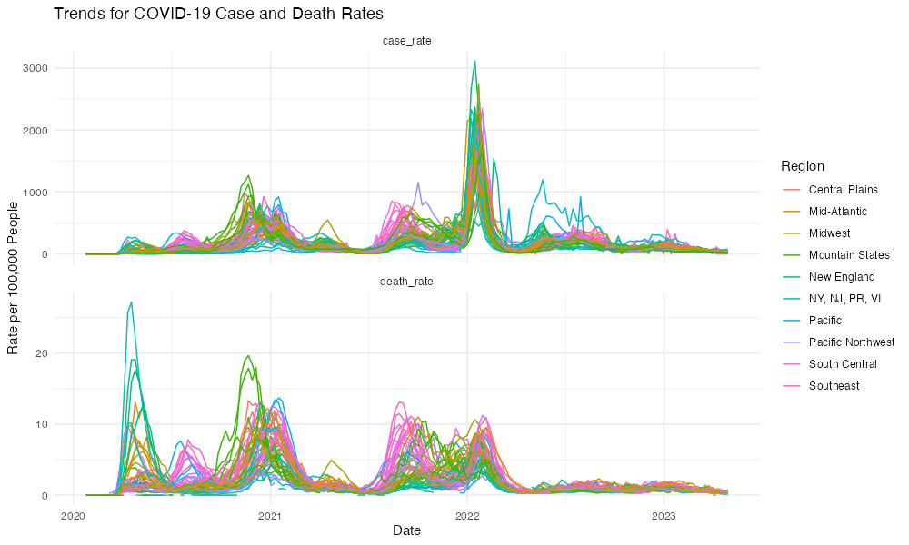
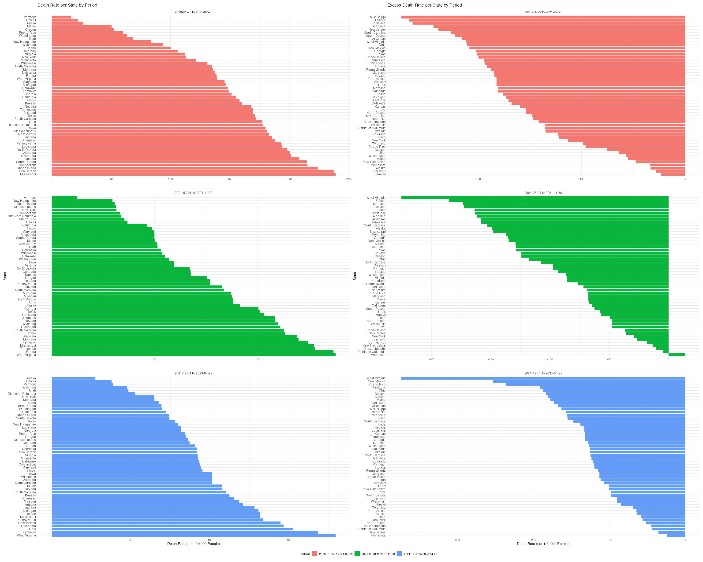

BST 260 Report
Abstract
This study focuses on the COVID-19 pandemic’s impact in the United States from January 2020 to December 2024, especially on temporal and geographic mortality patterns, changes in the virus’s virulence, and the relationship between COVID-19 mortality and excess mortality. The pandemic was divided into three distinct periods—the initial outbreak, the Delta variant surge, and the Omicron wave—based on visualized trends in cases and mortality. State-level mortality rates were computed for each period, which identifies states that performed better or worse in managing the pandemic. Trends in hospitalization and mortality rates were analyzed across the three periods to evaluate changes in virulence. The Delta variant exhibited higher virulence with elevated mortality rates, while the Omicron wave showed reduced severity due to widespread vaccination and improved treatments. Excess mortality was estimated weekly for each state, comparing observed and estimated mortality trends. Regression analysis revealed a strong and statistically significant relationship between COVID-19 mortality and excess mortality, further validated through visual alignments. However, discrepancies in early data and under reporting in later stages introduced uncertainties. This analysis emphasizes the importance of vaccination campaigns, targeted public health interventions, and addressing systemic inequities. These findings provide valuable suggestions to improve pandemic preparedness and reduce disparities in future health crises.
Introduction
The COVID-19 pandemic has deeply impacted global health and mortality, displaying some vulnerabilities in healthcare systems worldwide. Official statistics report millions of deaths, but evidence suggests the actual toll is 1.6 times higher than reported due to underreporting and the indirect effects of the pandemic (Karlinsky & Kobak, 2021; Shang et al., 2022). Excess mortality, the difference between observed and expected deaths, has become a critical measure for understanding the pandemic’s full impact. This metric includes both direct effects, such as deaths caused by the virus, and indirect consequences, like delayed medical care and strained healthcare systems (Kung et al., 2020). By offering a comprehensive view, excess mortality can guide public health policies and improve preparedness for future crises (Araja, 2022; Bech et al., 2021).
Globally, the impact of COVID-19 on mortality has varied. Some regions, like South America and parts of Asia, experienced high excess mortality due to severe outbreaks and healthcare challenges (Shang et al., 2022). In contrast, other areas saw reductions in non-COVID deaths, as measures like lockdowns limited the spread of other infectious diseases (Karlinsky & Kobak, 2021). In the United States, the pandemic showed significant health disparities. African American and Hispanic communities suffered disproportionately high death rates, largely due to structural inequalities like limited healthcare access and economic barriers (Siegel et al., 2021; Goldstein & Atherwood, 2020). These inequities underscore the importance of state-level analyses to identify patterns and develop equitable health interventions (Kung et al., 2020).
Evidence suggests that COVID-19 became less severe over time in some populations. For instance, by early 2022, case-hospitalization rates had decreased by 90% in locations like Spain and Boston compared to the start of the pandemic (Amer et al., 2022). Similarly, Massachusetts healthcare workers experienced fewer severe complications after April 2020 (Lan et al., 2020). Nationwide U.S. data from April 2020 to April 2021 showed that severe cases were a minority of hospital admissions, with their proportion decreasing over time (Whitfield et al., 2021). However, these improvements were not evenly distributed. Vulnerable groups, including racial and ethnic minorities, older adults, and socioeconomically disadvantaged populations, continued to experience higher rates of severe illness and death (Bergmann et al., 2022). This emphasizes the need to study changes in COVID-19 severity across different waves and populations to introduce adaptive public health strategies.
This study aims to analyze mortality trends in the United States from January 2020 to December 2024. Using daily and weekly mortality data, it will divide the pandemic into distinct waves based on trends observed through data visualizations. For each wave, the study will show the calculation of state-level death rates to identify which states were most and least affected. It will also assess whether COVID-19 became less severe over time by examining hospitalization and death rates. Additionally, this study will estimate weekly excess mortality for each state and evaluate how much of it can be attributed to COVID-19 deaths. By exploring both COVID-19-related and unrelated mortality, this study seeks to provide a clearer picture of the pandemic’s full impact. Through careful analysis and visualization, the study’s findings aim to inform public health strategies and improve readiness for future health emergencies (Ramírez-Soto & Ortega-Cáceres, 2022; Stokes et al., 2021).
Methods
The data used in this project are from multiple sources, including COVID-19 cases, deaths, hospitalizations, and vaccination records from CDC APIs, state-level population estimates from the US Census Bureau, and state-to-region mappings from publicly available JSON files. The estimated mortality was built based on the 2014-2019 mortality data which was sourced from CDC. Specifically, the time series approach was implemented by using state-level total death with 52 weeks per year. However, it was found that 2014 had 53 weeks which was considered as an outlier and was omitted from the analysis. The ARIMA model was used for fitting procedures in order to identify patterns and seasonality. A 208-week data frame was generated to forecast 2020 - 2023 mortality-related data. The results were aggregated to produce estimated mortality for each state without interruption from the COVID pandemic. The main data preprocessing involved cleaning, aggregating, and joining datasets by state and week using the CDC’s MMWR format and saved into “dat” data frame in the “WrangledData.rdata” file. Rates per 100,000 people were calculated for comparability across states and time periods. Then, the estimated data was merged with “dat” by year, week, and state. Later analysis was conducted based on these cleaned data. All programming was conducted in the R language. When dividing wave periods, data visualization packages were used to examine the data. The visualized graphs depicted a peak sandwiched between two flat zones; this was considered the epidemic wave. The pandemic was divided into three periods with more accurate time nodes based on time-series trends publish by the CDC: (1) starting from the initial global outbreak (Jan 25, 2020 – Feb 28, 2021), characterized by the first significant wave of COVID-19; (2) the beginning of the Delta Variant Surge (Mar 1, 2021 – Nov 30, 2021), marked by a rise in cases and deaths associated with the Delta variant; and (3) seeing the Omicron wave (Dec 1, 2021 – Apr 29, 2023), notable for a sharp increase in cases but a lower mortality rate due to widespread vaccinations.
State-level death rates were calculated for each period, and trends in hospitalization and death rates were analyzed to assess changes in virulence over time. Visualizations, including time-series plots and bar charts, were created using ggplot2 to support these analyses.
To test the relationship between COVID-19 and the excess mortality, the linear regression was conducted to examine the association between the COVID-related mortality and the excess mortality. To make the results more visible, a scatter plot with fitted lines was generated. A box plot visualizes the distribution of excess deaths across states, highlighting the median, interquartile range, and potential outliers, which helps identify variability and patterns in excess deaths and provides insight into the excess mortality in different states. The box plot also supports hypothesis testing and comparisons among states. A line chart was used to look at how well the actual number of mortality and the number of estimated deaths plus the number of COVID deaths fit. The closer fitted lines represent more similar trends, indicating that COVID may be used to explain excess mortality.
Lastly, the above processes regarding states’ performance in COVID were repeated for excess mortality. After separating the results by state, the weekly average mortality rate and total mortality rate were examined. The rate calculations were based on rate per 100,000 people.
Results
The COVID-19 pandemic was divided into three periods based on the observed trends in case and death rates across the US states, as well as outside information. From Figure 1, three major peaks were defined to be both present in case and death rate. They corresponded to and included the initial global outbreak, Delta Variant surge, and the Omicron wave; this was matched to information given by the official CDC website. The initial global outbreak (Jan 25, 2020 – Feb 28, 2021) is marked by the first large peak in cases and deaths, with a steep rise in both metrics during late 2020 and early 2021. The Delta Variant surge (Mar 1, 2021 – Nov 30, 2021) shows a distinct increase in both case and death rates, albeit with a broader and steady peak. Lastly, the Omicron wave (Dec 1, 2021 – Apr 29, 2023) features a sharp, high spike in case rates but a comparatively smaller rise in death rates, suggesting a shift in the pandemic dynamics and the advancements in scientific discoveries (widespread of vaccines).
State-level death rates varied significantly across the defined periods. From Figure 2, it can be clearly seen that in period (1), states like Rhode Island, New Jersey, and Mississippi reported the highest death rates, reflecting the early and severe impact of the pandemic in these regions, with Vermont and Hawaii at the lowest death rates. During the (2) phase, West Virginia, Florida, and Tennessee experienced the highest death rates, while Vermont, New Hampshire, and Rhode Island showed the lowest death rates. In (3) time period, West Virginia, Kentucky, and Ohio had the highest death rates, while Alaska, Hawaii, and Vermont had the lowest death rates. Interestingly, Vermont, Hawaii, and Alaska remains having the lowest death rates throughout the pandemic, possibly due to a small population and less ability to spread the disease.
The virulence of COVID-19 appeared to decrease over time, as evidenced by Figure 3. In (1), the vaccination (regular and booster, which has not been available yet) remains to be almost 0; the hospitalization rate increases rapidly in this time period. In (2), the regular series is increasing and people also begin to take booster vaccines; the hospitalization rate is not as high as (1). There is a large peak of hospitalization in (3) but declines quickly, possibly due to high vaccination (including booster) rates. This conclusion can also be explained by a decreasing death rate.
The time series analysis produced estimated data for 2020 - 2023 as expected. The result from linear regression is shown in Table 1. From the result, the excess mortality can be explained by the COVID pandemic. The LINE assumptions check passed by checking Q-Q plot and residual plot. A scatterplot was used to more clearly depict the relationship between the variables. It can be seen in the scatterplot that the dots form a straight line. In the Figure 4, it can also be seen that when COVID mortality was added to the actual mortality, it was very close to the estimated mortality, especially in 2020 - 2022.
State-level excess death rates varied significantly across the defined periods. A more negative excess mortality rate represents a larger rate. From Figure 2, it can be clearly seen that in period (1), states like Mississippi, Arizona, and Louisiana reported the highest excess death rates, with Vermont and Hawaii at the lowest death rates. During the (2) phase, West Virginia, Florida, and Montana experienced the highest excess death rates, while Massachusetts, District of Columbias and Minnesota showed the lowest excess death rates. In (3) time period, West Virginia, New Mexico, and Puerto Rico had the highest death rates, while District of Columbia, New Jersey, and Minnesota had the lowest death rates. Unlike results found for question two, no states remained having consistently the lowest death rate.


Discussion
This study’s analysis of the COVID-19 pandemic in the United States provides valuable insights into the shifting patterns of cases, mortality, and the virus’s overall impact over time. By dividing the pandemic into three major periods—initial outbreak, Delta variant surge, and Omicron wave—this study captured critical temporal and geographic variations, along with changes in the COVID-19’s virulence. These findings align with existing research while offering new opinions on public health strategies.
Temporal Trends and Pandemic Waves
Dividing the pandemic into three waves revealed how the challenges posed by COVID-19 evolved. The initial outbreak was noticed by steep increases in both cases and mortality. This reflects a lack of preparedness and natural immunity early in the pandemic. This phase indicated significant stress on healthcare systems nationwide. And it had broader observations of overwhelmed resources and elevated mortality rates during the first months of the pandemic.
The Delta variant surge maintained high mortality rates, which emphasizes variant’s increased virulence compared to the original strain. This finding aligns with existing research showing higher hospitalization and mortality rates during Delta than in other phases of the pandemic (Li et al., 2023). In contrast, the Omicron wave brought a record surge in cases but a comparatively smaller rise in mortality. This trend reflects the widespread impact of vaccination and improved treatments, which were critical in mitigating severe outcomes despite higher transmission rates (Lin et al., 2022). Vaccination campaigns likely reduced mortality by up to 70% during the Delta wave, displaying their importance in changing the trajectory of the pandemic.
These patterns explain how targeted public health interventions, such as timely vaccine rollouts, can influence pandemic outcomes. However, they also emphasize that a uniform strategy may not be enough because distinct waves presented different challenges across time and regions.
Geographic and State-Level Variations
Significant disparities in mortality rates across states persisted throughout the pandemic. States such as West Virginia and Kentucky consistently reported higher mortality rates, while Vermont and Hawaii maintained the lowest rates. This disparity reflects a range of factors, including population density, healthcare capacity, and demographic vulnerabilities. For instance, Vermont’s lower population density likely reduced transmission risks, while states with weaker healthcare systems faced greater difficulties managing surges.
Additionally, structural inequities, such as systemic racism, further exacerbated these disparities. Black and Hispanic populations faced disproportionately high mortality rates, even after adjusting for other factors (Goldstein & Atherwood, 2020; Sehra et al., 2020). These findings indicate the need for targeted interventions to address underlying systemic inequities, such as expanding healthcare access and addressing socioeconomic barriers in vulnerable communities.
Declining Virulence Over Time
Trends in hospitalization and mortality rates suggest COVID-19 became less virulent over time. The significant reduction in mortality rates during the Omicron wave reflects the success of vaccination campaigns in preventing severe outcomes. These findings are consistent with research indicating that vaccines effectively reduce disease severity and hospitalization rates, even with emerging variants (Lin et al., 2022). However, vaccines were less effective at preventing transmission. This emphasizes the importance of developing updated vaccines tailored to new variants (Krause et al., 2021).
Although some models have suggested that imperfect vaccines could drive the evolution of more severe strains (Gandon et al., 2001), current evidence indicates that COVID-19 vaccines have played a key role in transitioning the virus toward endemicity. Studies have shown that over time, immunity gained from vaccination and previous infections has contributed to the decreasing severity of COVID-19 cases (Lavine et al., 2021).
Excess Mortality and COVID-19 Mortality
The statistical analysis (Table 1) shows an extremely strong and statistically significant relationship between COVID-19 mortality and excess mortality, as evidenced by low p-values and high adjusted R-squared values. This result supports the hypothesis that COVID-19 mortality is closely connected with the gap between estimated and observed mortality. In other words, COVID-19 mortality aligns well with the “excess mortality” observed during the pandemic.
Figure 4 visually supports this conclusion. The pink shaded area represents COVID-19 mortality, while the green line indicates estimated mortality under non-pandemic conditions. The actual mortality (red line) consistently exceeds the estimated mortality, and the difference aligns closely with COVID-19 mortality. This alignment indicates that COVID-19 mortality explains much of the observed excess mortality, which validates the regression results.
However, the model’s fit deteriorates in 2023 as the pandemic subsided, reducing COVID-19’s impact on overall mortality and weakening the direct relationship between COVID-19 and excess mortality. Additionally, data discrepancies in early 2020, due to missing values in major states’ total mortality records in CDC data, introduced uncertainty. For example, incomplete data led to artificially low estimates in certain periods, explaining the discrepancies observed during the early stages of the pandemic.
Implications for Policy and Future Research
The findings from this study emphasize the need for sustained public health efforts to address disparities and enhance preparedness for future pandemics. Policies must prioritize vulnerable populations and regions with limited healthcare resources. Integrating vaccination campaigns with public education, equitable resource distribution, and expanded healthcare access is essential to address these challenges effectively.
Future research should delve deeper into the interplay between demographic factors, healthcare access, and policy interventions. Granular analyses, such as county-level studies, could provide more localized insights into urban-rural disparities and specific vulnerabilities. Additionally, long-term research on immunity and the effectiveness of multivalent vaccines will be critical for shaping strategies to combat emerging variants in future pandemics.
Limitations
This study offers a comprehensive analysis of COVID-19 trends but has notable limitations. First, missing CDC data from early 2020, particularly in major states, introduced extreme outliers, complicating accurate estimates of excess mortality. Second, as the pandemic waned in 2023, underreporting likely increased as unrecognized or unreported COVID-19 cases reduced the accuracy of mortality data, weakening the observed link between COVID-19 and excess mortality. Finally, while the linear regression model satisfied key assumptions (LINE), Q-Q plots revealed deviations at the tails, indicating difficulty in capturing extreme values and potentially affecting the robustness of conclusions in outlier states.
Conclusion
In conclusion, this study emphasizes the dynamic nature of the COVID-19 pandemic, with significant variations across time, geography, and population groups. Vaccination campaigns were instrumental in reducing mortality and reducing the virus’s impact, but persistent disparities reveal the need for targeted public health interventions. By addressing systemic inequities and enhancing preparedness, we can build a more equitable and effective healthcare system capable of responding to future health crises.